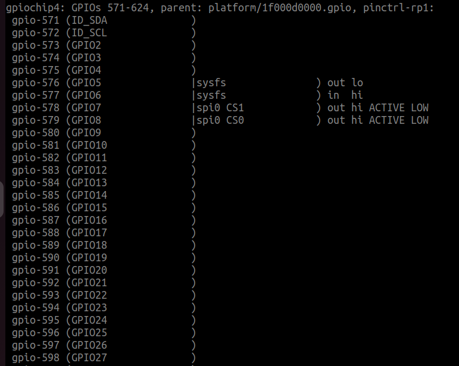

Raspberry Pi - Raspberry Pi OS Quick Start
Overview
This section provides Eclipse Kura™ quick installation procedures for the Raspberry Pi and the Kura development environment.
Warning
This quickstart will install the version of Kura with the administrative web UI and network configuration support but not CAN bus support. For more information on this please visit the Eclipse Kura download page
This quickstart has been tested using the latest Raspberry Pi OS 32 and 64 bits images which are available for download through the official Raspberry Pi foundation site and the Raspberry Pi Imager.
Warning
Recent versions of Raspberry Pi OS 32 bit on Raspberry PI 4 will use by default a 64 bit kernel with a 32 bit userspace. This can cause issues to applications that use the result of uname -m to decide which native libraries to load (see https://github.com/raspberrypi/firmware/issues/1795). This currently affects for example the Kura SQLite database connector. It should be possible to solve by switching to the 32 bit kernel setting arm_64bit=0 in /boot/config.txt and restarting the device.
For additional details on OS compatibility refer to the Kura™ release notes.
Enable SSH Access
The ssh server is disabled by default on Raspbian images released after November 2016, in order to enable it follow the instructions available here.
If you're using the Raspberry Pi Imager you can directly enable SSH before writing the operating system into the SD card by clicking on the "setting" icon.

Eclipse Kura™ Installation
To install Eclipse Kura with its dependencies on the Raspberry Pi, perform the following steps:
-
Boot the Raspberry Pi with the latest Raspberry Pi OS image.
-
Make sure your device is connected to the Internet. The best installation experience can be obtained when the device is cabled to the local network and the Internet. By default, the Raspberry Pi OS configures the ethernet interface
eth0in DHCP mode. -
Upgrade the system:
Tip
Optional: Since version 5.3.0 Kura also supports Eclipse Temurin™ as an alternative JVM. To install it you need to perform these additional steps:
-
Download the Kura package with:
wget http://download.eclipse.org/kura/releases/<version>/kura-<kura-version>_generic-<arch>_installer.debNote: replace
<version>in the URL above with the version number of the latest release (e.g. 5.5.0) and<arch>with your device architecture -
Install Kura with:
-
For a correct configuration of the Wlan interface, it is necessary to set the Locale and the WLAN Country through the
raspi-configcommand:
From the raspi-config main menu select
Localisation Options:
Then modify the Locale and WLAN Country with with the proper settings for your location. For example, an user located in Italy could set the values as the ones in the table:
Setting Value L1 Locale it_IT.UTF-8 UTF-8 L4 WLAN Country IT Italy -
(Optional) To correctly use the GPIO pins, the user is asked to update the
jdk.dio.propertiesfile with the proper configuration, based on its own device.This is required since the
sysfsinterface has been deprecated, and some OS distribution may have already suppressed it. Moreover, the kernel complains if a static base number is assigned to a GPIO controller: indeed, when it assigns the numbers automatically, it usually starts from 511. More information can be found here.In order to set the correct configuration the user can perform the following steps:
- Execute on the device the command
cat /sys/kernel/debug/gpio, looking for entries similar togpio-ABC (GPIxx): from this information it is possible to retrieve which number the GPIO controller was assigned to by the OS (in this case the GPIO controller numberxxis assigned with the numberABC). The image below represent an example of this file

- Modify the
/opt/eclipse/kura/framework/jdk.dio.propertieswith the number and controllers found in the previous step:
573 = deviceType: gpio.GPIOPin, pinNumber:573, name:GPI02 574 = deviceType: gpio.GPIOPin, pinNumber:574, name:GPIO3 575 = deviceType: gpio.GPIOPin, pinNumber:575, name:GPIO4 576 = deviceType: gpio.GPIOPin, pinNumber:576, name:GPIO5 577 = deviceType: gpio.GPIOPin, pinNumber:577, name:GPIO6 578 = deviceType: gpio.GPIOPin, pinNumber:578, name:GPIO7 579 = deviceType: gpio.GPIOPin, pinNumber:579, name:GPIO8 580 = deviceType: gpio.GPIOPin, pinNumber:580, name:GPIO9 581 = deviceType: gpio.GPIOPin, pinNumber:581, name:GPIO10 582 = deviceType: gpio.GPIOPin, pinNumber:582, name:GPIO11 583 = deviceType: gpio.GPIOPin, pinNumber:583, name:GPIO12 584 = deviceType: gpio.GPIOPin, pinNumber:584, name:GPIO13 585 = deviceType: gpio.GPIOPin, pinNumber:585, name:GPIO14 586 = deviceType: gpio.GPIOPin, pinNumber:586, name:GPIO15 587 = deviceType: gpio.GPIOPin, pinNumber:587, name:GPIO16 588 = deviceType: gpio.GPIOPin, pinNumber:588, name:GPIO17 589 = deviceType: gpio.GPIOPin, pinNumber:589, name:GPIO18 590 = deviceType: gpio.GPIOPin, pinNumber:590, name:GPIO19 591 = deviceType: gpio.GPIOPin, pinNumber:591, name:GPIO20 592 = deviceType: gpio.GPIOPin, pinNumber:592, name:GPIO21 593 = deviceType: gpio.GPIOPin, pinNumber:593, name:GPIO22 594 = deviceType: gpio.GPIOPin, pinNumber:594, name:GPIO23 595 = deviceType: gpio.GPIOPin, pinNumber:595, name:GPIO24 596 = deviceType: gpio.GPIOPin, pinNumber:596, name:GPIO25 597 = deviceType: gpio.GPIOPin, pinNumber:597, name:GPIO26 598 = deviceType: gpio.GPIOPin, pinNumber:598, name:GPIO27 gpio.GPIOPin = initValue:0, deviceNumber:0, direction:3, mode:-1, trigger:3 uart.UART = baudRate:19200, parity:0, dataBits:8, stopBits:1, flowControl:0You can also check your GPIO device configuration executing the command
pinout - Execute on the device the command
-
Reboot the Raspberry Pi with:
Kura starts on the target platform after reboot.
-
Kura setups a local web ui that is available using a browser via:
The browser will prompt the user to accept the connection to an endpoint with an untrusted certificate:

Once trusted the source, the user will be redirected to a login page where the following credentials: username:
adminpassword:admin